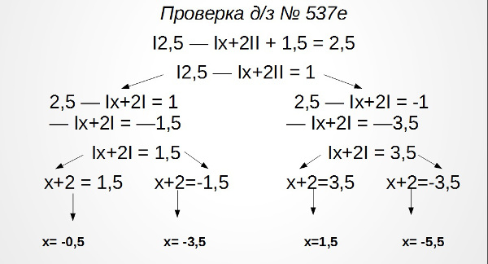

учитель алгебры:
михайлова юлия
валерьевна
Рабочая программа по математике 9 класс
Документ для скачивания: Скачать: https://goo.gl/Ghbdzz
9 Класс
В помощь ученику для подготовки к проверочным работам:
Дополнительные занятия
- - 9А, 9Б, 9В - пятница, 8:05, каб. 1205
- - 9Г - суббота, 13:35, каб. 1205
Для подготовки к ГИА:
- http://www.fipi.ru/content/otkrytyy-bank-zadaniy-oge - открытый банк заданий по ОГЭ
- https://math-oge.sdamgia.ru/
В данном разделе представлены подготовительные варианты контрольных работ по алгебре:
Вопросы к зачету по функциям:
- Определение функции и способы ее задания.
- Основные понятия: область определения и значений функции, нули и промежутки знакопостоянства.
- Возрастающая и убывающая функции (определение)
- Свойства монотонных функций (всего 7). Композиция двух функций (определение)
- Четные и нечетные функции. (определения). Особенности графиков четных и нечетных функций.
- Функция ограничена снизу. Функция ограничена сверху. Ограниченная функция. (определения)
- Квадратичная функция (определение)
- Построение графика квадратичной функции (алгоритм)
8 Класс
В помощь ученику для подготовки к проверочным работам:
Дополнительные занятия
- - 8А, 8В - пятница в 8:05
- - 8Б - понедельник в 8:05
- - 8Г - среда в 8:05
В данном разделе представлены подготовительные варианты контрольных работ по алгебре:
Умножение, возведение в степень и деление дробей
Характерными для общеобразовательного класса являются задания №1, 2 и 3. В задании № 4 в разложении на множители участвуют степени. Наиболее трудным заданием для 8 класса является №7, в котором используется разложение способом группировки и формула разложения для n-ых степеней.
Дроби и их свойства
Несмотря на то что в основном материал контрольной работы несложный и большей своей частью смыкается с тематикой общеобразовательного класса, почти в каждом задании есть что-то, что учащимся нематематического класса может быть незнакомо
7 Класс
В помощь ученику для подготовки к проверочным работам:
Пособие для учащихся, содержащее теоретические сведения по математике 5-6 классов.
Документ для скачивания: http://goo.gl/VrM76UПособие для учащихся по алгебре 7 класса. Составитель Михайлова Ю.В. В данном документе представлены теоретические сведения по темам:
- - Выражение и множество его значений
- - Одночлены
- - Многочлены
- - Уравнение с одной переменной
Документ для скачивания: http://goo.gl/xZQsA6Для учащихся пример решения уравнения, содержащего переменную под знаком модуля

В данном разделе представлены подготовительные варианты контрольных работ по алгебре:
Выражение и множество его значений
Несмотря на то что в основном материал контрольной работы несложный и большей своей частью смыкается с тематикой общеобразовательного класса, почти в каждом задании есть что-то, что учащимся нематематического класса может быть незнакомо
Одночлены
Более сложными представляются задания, в которых содержится степень с буквенным показателем
Многочлены
Наибольшую трудность могут представлять для учащихся упражнения 4, 5, 7. С остальными заданиями справятся и учащиеся общеобразовательных школ